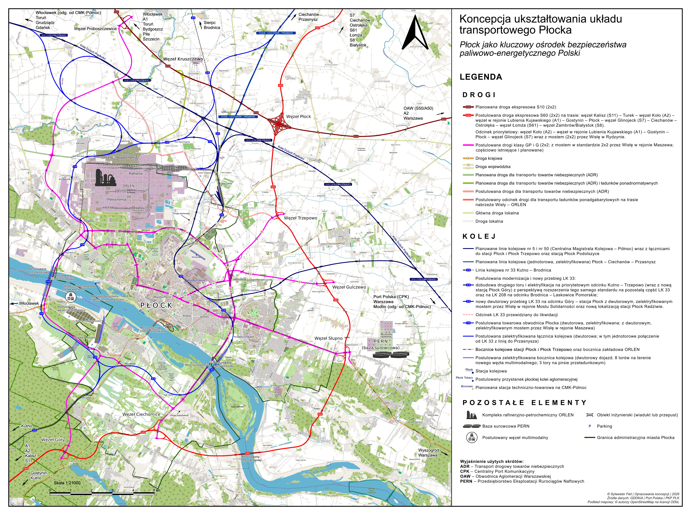
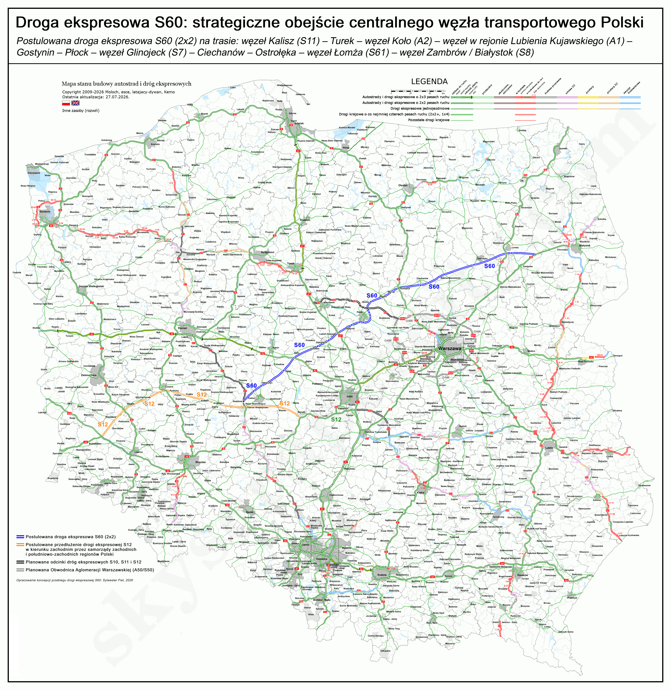
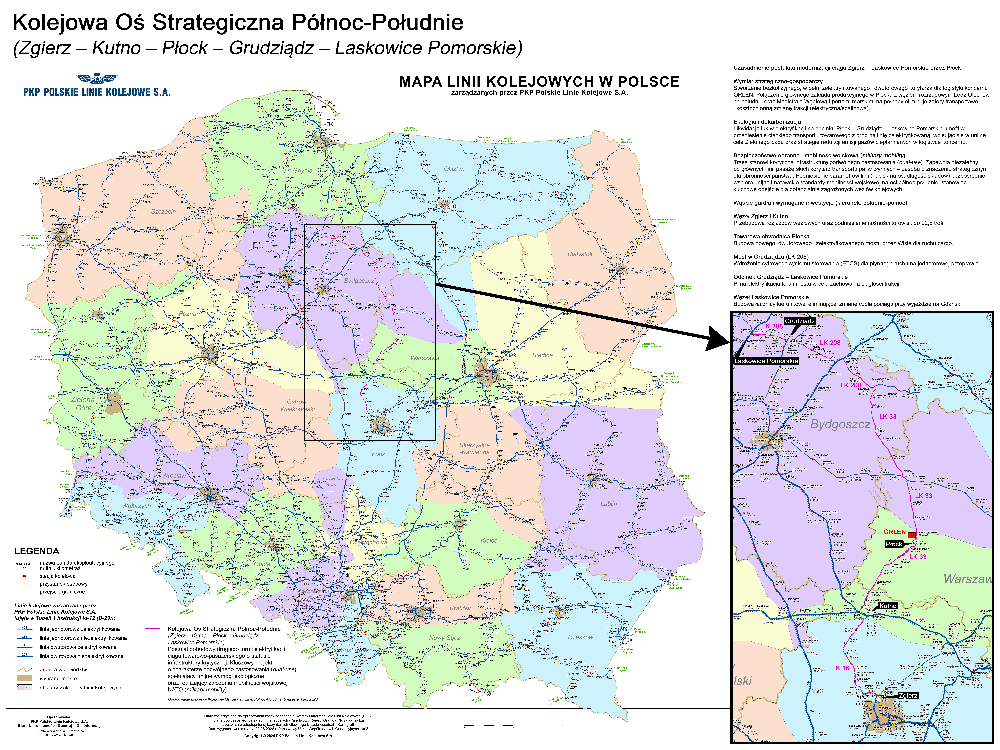

Przedmiotem niniejszego opracowania jest wykazanie konieczności pilnej i kompleksowej rekonfiguracji infrastruktury transportowej Płocka – aglomeracji stanowiącej absolutny fundament oraz geostrategiczny zwornik bezpieczeństwa paliwowo-energetycznego i obronnego Rzeczypospolitej Polskiej. Obecny układ komunikacyjny generuje krytyczne ryzyka dla ciągłości funkcjonowania państwa ze względu na brak bezkolizyjnych powiązań infrastruktury krytycznej z siecią dróg szybkiego ruchu oraz niedostosowanie sieci kolejowej do wymogów masowego transportu cargo i przewozów pasażerskich.
Aglomeracja płocka skupia kluczową infrastrukturę krytyczną kraju (ORLEN S.A. i PERN S.A.), będąc jednocześnie komunikacyjną wyspą bez odpowiednich połączeń drogowych i kolejowych. W obliczu zagrożeń hybrydowych obecny układ generuje krytyczne ryzyko typu pojedynczego punktu awarii (single point of failure).
Osiągnięcie pełnej odporności logistycznej i gospodarczej tego kluczowego hubu przemysłowego wymaga równoległego wdrożenia zintegrowanego pakietu rozwiązań infrastrukturalnych, opierającego się na wymienionych poniżej filarach.
ZINTEGROWANY PAKIET INWESTYCYJNY (MASTERPLAN DLA PŁOCKA):
Przedstawione w Masterplanie inwestycje mają na celu przełamanie peryferyjności transportowej regionu i pełną integrację Płocka z krajowym systemem logistycznym (całościowy układ powiązań przedstawia Rys. 1).
Kluczowym elementem w komponencie drogowym jest priorytetowy dla miasta odcinek węzeł Koło (A2) – węzeł w rejonie Lubienia Kujawskiego (A1) – Gostynin – Płock – węzeł Glinojeck (S7). Postulowana trasa stanowi integralną część szerszego, makroregionalnego korytarza drogi ekspresowej w układzie Kalisz – Zambrów (Rys. 2), którego realizacja zapewni kluczową redundancję topologiczną sieci i istotnie podniesie odporność transportową centralnej Polski. W skali regionalnej ciąg ten będzie pełnił funkcję zewnętrznej, strategicznej obwodnicy płockiego węzła rafineryjnego, mitygującej ryzyka związane z koncentracją transportu materiałów niebezpiecznych.
W komponencie kolejowym Masterplan kładzie nacisk na dobudowę drugiego toru oraz pełną elektryfikację LK 33 na odcinku Kutno – Trzepowo, jako kluczowego ogniwa Kolejowej Osi Strategicznej Północ-Południe (Zgierz – Kutno – Płock – Grudziądz – Laskowice Pomorskie), zilustrowanej na Rys. 3. W celu pełnego wykorzystania potencjału tego korytarza, niezbędne jest podjęcie działań na szczeblu rządowym w celu ujęcia w krajowych planach inwestycyjnych analogicznej, dalszej modernizacji całej LK 33 na północ od stacji Trzepowo (dobudowa drugiego toru i elektryfikacja) oraz LK 208 na odcinku Brodnica – Laskowice Pomorskie. Działanie to powinno stać się elementem komplementarnych planów zarządcy infrastruktury narodowej (PKP Polskie Linie Kolejowe S.A.).
Warunkiem osiągnięcia efektu synergii jest systemowe i ciągłe dostosowywanie parametrów technicznych publicznej sieci transportowej do dynamicznie zmieniających się potrzeb surowcowych i technologicznych, jakie generują strategiczne zakłady przemysłowe w Płocku.
STRATEGIA ETAPOWANIA (2027–2037):
Drogi: Budowa wewnętrznego Ringu Miejskiego Płocka z dwujezdniowym (2x2) mostem w Maszewie (klasa obciążenia MLC 150 / STANAG, separacja ADR) oraz domknięcie korytarza wschód-zachód, a także rozpoczęcie budowy dróg dojazdowych na trasie Ring Miejski – drogi ekspresowe (S10 i S60) i korytarzy logistyczno-transportowych wokół zakładu produkcyjnego ORLEN.
Kolej: Budowa dwutorowej Towarowej Obwodnicy Płocka wraz z nowym mostem towarowo-wojskowym przez Wisłę w Maszewie i łącznicą do LK 33 oraz uruchomienie nowej stacji na LK 33 Płock Góry.
Drogi: Budowa strategicznego odcinka Drogi Ekspresowej S60: węzeł Koło (A2) – węzeł w rejonie Lubienia Kujawskiego (A1) – Gostynin – Płock – węzeł Glinojeck (S7) z nowym mostem (2x2) w Rydzynie (klasa obciążenia MLC 150 / STANAG), a także finalizacja budowy dróg dojazdowych na trasie Ring Miejski – drogi ekspresowe i korytarzy logistyczno-transportowych w rejonie kompleksu zakładowego ORLEN.
Kolej: Dobudowa drugiego toru i elektryfikacja LK 33 na trasie Kutno – Trzepowo oraz nowy przebieg pasażersko-awaryjny linii przez Wisłę nowym mostem w rejonie Mostu Solidarności z realizacją bezkolizyjnego węzła trójkątnego na pograniczu Radziwia i Gór, a także stacji Płock Radziwie w nowej lokalizacji.
Kolej: Uruchomienie płockiej kolei aglomeracyjnej, budowa bezkolizyjnych skrzyżowań oraz łącznic integrujących obwodnicę towarową z CMK-Północ i linią do Przasnysza.
Węzeł Multimodalny: Budowa portu rzeczno-kolejowo-drogowego (Węzeł Multimodalny) nad Zbiornikiem Włocławskim.
Terminowa realizacja wskazanych faz wdrożeniowych stanowi fundament dla osiągnięcia wielopoziomowych korzyści, kluczowych zarówno dla rozwoju regionu płockiego, jak i dla stabilności całego kraju.
STRATEGICZNE KORZYŚCI DLA KRAJU:
Szacowany CapEx wynosi 17,4 – 21,8 mld PLN na lata 2026–2036. Zintegrowane inwestycje w rejonie Płocka spełniają kryteria infrastruktury podwójnego zastosowania (dual-use), kwalifikując się do natychmiastowego dofinansowania z budżetu unijnego programu CEF Transport – Military Mobility oraz krajowych środków obronnych.
Realizacja zintegrowanego Masterplanu dla Płocka to klucz do zbudowania bezkompromisowej odporności i pełnej redundancji logistycznej w rejonie kluczowych zakładów strategicznych kraju. Centralnym elementem tego systemu stanie się nowa oś Drogi Ekspresowej S60, która trwale przełamie dotychczasową izolację transportową regionu i zagwarantuje bezpieczne potoki dystrybucyjne cargo. Skala oraz interdyscyplinarny charakter przedsięwzięcia wymagają pilnego powołania dedykowanego zespołu międzyresortowego przy Radzie Ministrów, zdolnego skoordynować działania organów rządowych, spółek Skarbu Państwa i samorządów. Wdrożenie tych priorytetowych inwestycji wyeliminuje krytyczne ryzyko paraliżu infrastruktury krytycznej, stanowiąc fundament dla długoterminowego bezpieczeństwa energetycznego, surowcowego oraz obronnego Rzeczypospolitej Polskiej.
Współczesne wyzwania geopolityczne, narastające zagrożenia hybrydowe oraz wymogi mobilności wojskowej (military mobility) NATO wymuszają natychmiastową weryfikację mapy transportowej Polski w rejonie jej najważniejszego węzła rafineryjno-petrochemicznego i wodorowego – Płocka. Nadrzędnym celem państwa musi być zapewnienie ciągłości operacyjnej i obronnej płockich zakładów, które stanowią serce zaopatrzenia paliwowego kraju. Pomimo tak fundamentalnej roli, wieloletnie, systemowe zaniedbania doprowadziły do sytuacji, w której miasto pozostaje komunikacyjną wyspą.
Dotychczasowe, odizolowane plany centralne – w tym rozbudowa drogi S10, omijającej miasto daleko od północy oraz doraźne modernizacje tras krajowych do klasy GP – nie eliminują ryzyk systemowych. Taki układ całkowicie pozbawia Płock szansy na utworzenie choćby częściowego ringu obwodowego. Stanowi to krytyczne zagrożenie w sytuacjach kryzysowych, drastycznie ograniczając mobilność służb ratowniczych oraz uniemożliwiając sprawną ewakuację ludności z zagrożonych stref aglomeracji.
W zaistniałej sytuacji konieczne jest podejście wielowektorowe. Strukturalna rekonfiguracja układu kolejowego, rozbudowa zintegrowanego Ringu Miejskiego oraz wprowadzenie Drogi Ekspresowej S60 jako jednego z głównych elementów sieci krajowej stanowią współzależne projekty (Rys. 1). Działania te muszą zostać zrealizowane przy skoordynowanej współpracy resortów centralnych (MON, MI, MAP), samorządów oraz spółek Skarbu Państwa.
Prezentowany dokument ma charakter ramowego, społecznego Masterplanu. Jako koncepcja kierunkowa (framework), skupia się na strategicznej esencji – definicji korytarzy transportowych, mitygacji ryzyk i integracji systemowej. Celowo pominięto w nim wtórne analizy cząstkowe, pozostawiając szczegółowe modelowanie ruchu oraz mikroskopowe projekty budowlane w gestii właściwych organów samorządowych i rządowych.
Aglomeracja płocka skupia unikalną w skali europejskiej koncentrację zakładów dużego i zwiększonego ryzyka wystąpienia poważnej awarii przemysłowej (zgodnie z dyrektywą SEVESO III). Kompleks produkcyjny ORLEN oraz baza surowcowo-magazynowa PERN odpowiadają za ciągłość dostaw paliwowych dla gospodarki oraz Sił Zbrojnych RP. Ta scentralizowana infrastruktura krytyczna znajduje się obecnie w logistycznym klinczu – transport produktów rafineryjnych i surowców opiera się na kolizyjnych, wąskich drogach jednojezdniowych oraz liniach kolejowych przecinających środek osiedli mieszkaniowych.
W tym kontekście fundamentalnym błędem planistycznym jest traktowanie infrastruktury transportowej i surowcowej jako statycznej. Istnieje krytyczna konieczność usankcjonowania prawnego i przestrzennego zasady ciągłego, wzajemnego dostosowywania publicznych korytarzy transportowych oraz podziemnych sieci przesyłowych. Współczesna inżynieria pozwala na całkowite eliminowanie kolizji przestrzennych – w miejscach zbliżenia projektowanych dróg i torów do istniejących korytarzy rurociągowych, zakłady przemysłowe zyskują możliwość elastycznego zarządzania swoją infrastrukturą. Poprzez zastosowanie zaawansowanych metod bezwykopowych (np. horyzontalnych przewiertów sterowanych HDD), trasy przesyłowe mogą być bezkolizyjnie dostosowywane i przekładane w sposób całkowicie nieinwazyjny dla nowo powstających arterii. Technologiczna koordynacja tych działań sprawia, że podziemne rurociągi przestają być barierą planistyczną, stając się elementem zintegrowanego systemu logistycznego. Ta sama zasada elastyczności przestrzennej odnosi się również do napowietrznych linii elektroenergetycznych najwyższych napięć, które poprzez nowoczesne techniki skablowania lub podwyższania pylonów mogą być bezkolizyjnie integrowane z nowymi korytarzami transportowymi.
Podsumowując: dalsze podtrzymywanie komunikacyjnego status quo w rejonie płockiego węzła przemysłowego rodzi krytyczne niebezpieczeństwo o charakterze systemowym, uderzając bezpośrednio w fundamenty bezpieczeństwa cywilnego oraz obronności Rzeczypospolitej Polskiej. Dynamiczny rozwój technologiczny, surowcowy i produkcyjny kompleksu rafineryjno-petrochemicznego, przy jednoczesnym pozostawieniu przestarzałej, niewydolnej i kolizyjnej sieci transportowej, nieuchronnie doprowadzi do przekroczenia barier bezpieczeństwa publicznego. W przypadku wystąpienia poważnej awarii przemysłowej, aktu sabotażu czy eskalacji konfliktu hybrydowego, brak odseparowanych szlaków cargo i niezależnych korytarzy strategicznych wygeneruje katastrofalne zagrożenie dla życia i zdrowia ludności oraz struktury miejskiej Płocka. W wymiarze militarnym podtrzymywanie obecnego stanu infrastruktury paraliżuje mobilność wojsk sojuszniczych NATO i Wojska Polskiego (doktryna military mobility), odcinając siły zbrojne od ich głównego, centralnego źródła zaopatrzenia paliwowo-energetycznego. Kosztem zaniechania działań modernizacyjnych nie są dziś wyłącznie straty ekonomiczne, lecz realne ryzyko destabilizacji systemu obronnego kraju i utraty zdolności operacyjnych na wschodniej flance.
Uzasadnienie natychmiastowej rozbudowy układu transportowego zyskuje nowoczesny wymiar technologiczny. Płock, jako serce Mazowieckiej Doliny Wodorowej, uruchomił już instalacje doczyszczania wodoru i staje się głównym hubem dystrybucyjnym zielonego wodoru dla transportu ciężkiego w Polsce. Przewóz wodoru w tzw. tube-trailerach pod wysokim ciśnieniem (350–500 bar) niesie za sobą gigantyczne wyzwania z zakresu prewencji antyterrorystycznej i ratownictwa. Prowadzenie takiego transportu starymi drogami krajowymi (DK60/DK62) generuje drastyczne ryzyko wypadkowe i sabotażowe. Bezpieczna, bezkolizyjna i odizolowana od miast infrastruktura jest niezbędna do dystrybucji paliwa nowej generacji do odbiorców strategicznych.
Utrzymywanie obecnego anachronizmu komunikacyjnego wokół infrastruktury krytycznej generuje trzy fundamentalne ryzyka:

Płock charakteryzuje się unikalnym położeniem geograficznym – leży w bliskości centralnego węzła drogowego i kolejowego kraju, Portu Polska w Baranowie oraz aglomeracji warszawskiej i łódzkiej. Położenie nad Wisłą, będącą częścią międzynarodowej drogi wodnej E40, stwarza idealne warunki do budowy w Płocku nowoczesnego, intermodalnego Węzła Multimodalnego. Inwestycja ta przybierze formę zaawansowanego portu rzeczno-kolejowo-drogowego, zlokalizowanego bezpośrednio nad Zbiornikiem Włocławskim. Nowy kompleks zintegruje masowe potoki cargo oraz logistykę wodorową strategicznych spółek Skarbu Państwa (ORLEN, PERN), obejmując dedykowaną strefę magazynową dla ładunków skonteneryzowanych i drobnicowych, jednak z celowym wyłączeniem instalacji długoterminowego magazynowania paliw płynnych.
Perspektywa ta zyskuje krytyczne znaczenie w kontekście rządowego programu Portu Polska, obejmującego budowę centralnego hubu w Baranowie (zlokalizowanego około 80 km od Płocka) oraz głęboką rozbudowę portu lotniczego w Modlinie. Postulowany płocki Węzeł Multimodalny zyskuje status strategicznego hubu konsolidacyjnego o charakterze dwukierunkowym. Zapewnia on bezpośrednią integrację pasażersko-czarterową z Lotniskiem Warszawa-Modlin poprzez projektowaną LK 247, przy jednoczesnym otwarciu bezkolizyjnego korytarza dla masowych potoków towarowych kierowanych Towarową Obwodnicą Płocka na południe, wprost do głównego węzła logistycznego w Baranowie. Ponadto, wysokie parametry hydrologiczne Zbiornika Włocławskiego gwarantują znacznie wydłużony sezon nawigacyjny oraz stabilność głębokości tranzytowych dla ciężkiego frachtu, co pozwala prewencyjnie przejąć presję logistyczną i drastycznie zredukować emisje spalin z transportu kołowego w duchu nowoczesnej polityki klimatycznej.
Węzeł Multimodalny zintegrowany będzie z nowym dwutorowym i zelektryfikowanym szlakiem dojazdowym od Towarowej Obwodnicy Płocka, wyposażonym w bezkolizyjny, dwutorowy węzeł rozjazdów na wpięciu w linię magistralną. Projekt obejmuje realizację ekologicznej stacji rozrządowo-manewrowej o długości torów 750 metrów, wyposażonej w układ 8 torów stacyjnych w pełni zelektryfikowanych za pomocą zautomatyzowanego systemu odchylanej sieci trakcyjnej, uzupełniony o dedykowaną, zelektryfikowaną 4-torową wiązkę manewrową do cofania składów. Wszystkie tory ładunkowe obsługiwane są przez zautomatyzowane, elektryczne suwnice bramowe RMG. W skład zielonej infrastruktury wchodzi pirs przeładunkowy dostosowany do parametrów IV klasy drogi wodnej z kompleksem 3 torów kolejowych w nawierzchni zabrukowanej, również objętych systemem odchylanej sieci trakcyjnej, oraz niezależny pirs drogowy o podwyższonej nośności konstrukcyjnej, dedykowany dla ciężkiego transportu kołowego, pojazdów ponadnormatywnych i ładunków ponadgabarytowych, w tym aparatury procesowej i komponentów dla kompleksu produkcyjnego ORLEN, a także towarów niebezpiecznych (klasyfikowanych zgodnie z umowami ADR i RID).
Projektowany węzeł docelowo zastąpi i rozwinie funkcjonalność dotychczasowej, tymczasowej infrastruktury przeładunkowej (m.in. Nabrzeża Petrochemii), transformując doraźny punkt rozładunku aparatury wielkogabarytowej w stały, zintegrowany hub transportowy o znaczeniu krajowym i międzynarodowym, spełniający wymogi IV klasy drogi wodnej (Rys. 1).
Aglomeracja płocka charakteryzuje się unikalną w skali europejskiej specyfiką strukturalną. W przeciwieństwie do państw Europy Zachodniej, gdzie infrastruktura rafineryjno-przesyłowa jest silnie zdecentralizowana i rozproszona geograficznie, polski system bezpieczeństwa energetycznego – ukształtowany jeszcze w minionej epoce geopolitycznej – wykazuje skrajnie wysokie, procentowe uzależnienie od jednego ośrodka przemysłowego. Koncentracja dominującego wolumenu krajowej produkcji paliw w płockiej rafinerii, w połączeniu z funkcją międzynarodowego hubu sieci rurociągowych PERN, tworzy zjawisko krytycznej asymetrii ryzyka.
W obliczu tak zdefiniowanej struktury zagrożeń, kluczowym elementem strategii obronnej i prewencyjnej państwa musi być zapewnienie najwyższej przepustowości korytarzy transportowych oraz radykalne skrócenie czasu dotarcia do Płocka dla zewnętrznych sił ratowniczych. Skala potencjalnego zdarzenia o charakterze poważnej awarii przemysłowej, aktu sabotażu czy ataku hybrydowego w rejonie tak potężnego kompleksu produkcyjnego z definicji przekracza autonomiczne zdolności ratownicze regionu. Akcja ratowniczo-gaśnicza, likwidacji skutków zdarzenia oraz prewencyjna będzie wymagała natychmiastowego zaangażowania sił i środków Krajowego Systemu Ratowniczo-Gaśniczego oraz wydzielonych komponentów Sił Zbrojnych RP (w tym wojsk chemicznych).
W konsekwencji, obecna zapaść infrastruktury drogowej i kolejowej wokół Płocka przestaje być problemem lokalnym. Jest to krytyczne wąskie gardło, które w warunkach kryzysowych paraliżuje nie tylko centralny węzeł surowcowo-energetyczny, ale bezpośrednio destabilizuje bezpieczeństwo surowcowe całej Rzeczypospolitej Polskiej, przemysłu rafineryjnego części Niemiec oraz – co fundamentalne w kontekście współczesnych zagrożeń asymetrycznych – zdolności operacyjne i logistyczne całej wschodniej flanki NATO.
Warto kategorycznie podkreślić, że planowane inwestycje w sojuszniczą infrastrukturę przesyłową NATO (systemy rurociągów paliwowych na wschodniej flance) nie zniwelują tych ryzyk operacyjnych. Rurociągi wojskowe, z uwagi na swoją jednokierunkową specyfikę zaopatrzeniową oraz ograniczenia asortymentowe, stanowią jedynie komponent systemu logistycznego, którego fizycznym punktem początkowym i produkcyjnym pozostaje płocki węzeł surowcowo-energetyczny. Ponadto, w warunkach konfliktu pełnoskalowego lub działań asymetrycznych, podziemne linie przesyłowe są skrajnie podatne na akty sabotażu i cyberataki na infrastrukturę sterującą (stacje pomp). Zgodnie z doktryną dywersyfikacji logistycznej NATO, w przypadku eliminacji rurociągu, ciężar natychmiastowego zasilania wojsk przejąć musi masowy transport kołowy (korytarze techniczne ADR) oraz kolejowy (składy RID). Bez radykalnej rozbudowy Drogi Ekspresowej S60 oraz dobudowy drugiego toru z węzła Trzepowo, system obronny kraju pozbawia się logistycznego alternatywnego korytarza dystrybucyjnego (osi rokadowej), pozostawiając wschodnią flankę Sojuszu bez realnego zabezpieczenia na wypadek unieruchomienia sieci podziemnych.
Projektowane przeprawy mostowe w rejonie Płocka (Rydzyno oraz Maszewo) celowo zaplanowano w najwyższej, nadzwyczajnej klasie obciążenia MLC 150 zgodnie ze STANAG 2021. Pozwoli to nie tylko na bezpieczny, równoległy i dwukierunkowy przerzut kolumn najcięższych pojazdów gąsienicowych NATO (ruch w klasie MLC 70/100 na obu jezdniach jednocześnie), ale również w pełni zabezpieczy logistykę dual-use dla transportu krytycznej aparatury ponadgabarytowej dla kompleksu rafineryjno-petrochemicznego ORLEN.
Płock nie może być analizowany wyłącznie przez pryzmat standardowych kryteriów urbanistycznych czy demograficznych stosowanych wobec innych miast. W kategoriach geoekonomicznych i militarnych ośrodek ten pełni unikalną funkcję grawitacyjnego centrum bezpieczeństwa paliwowo-energetycznego Rzeczypospolitej oraz całej wschodniej flanki NATO. Skumulowanie w jednej przestrzeni geograficznej największego kompleksu rafineryjno-petrochemicznego (ORLEN) w regionie, kluczowych magistrali przesyłowych ropy i produktów naftowych PERN, a także planowanych hubów logistyki wodorowej sprawia, że Płock stanowi kluczowy punkt krytyczny systemu odporności państwa.
W tę unikalną charakterystykę wpisuje się rzeka Wisła, która w rejonie Płocka odgrywa rolę wielowymiarową. Z jednej strony stanowi ona integralny komponent Międzynarodowej Drogi Wodnej E40, czyli naturalną śródlądową autostradę logistyczną o ogromnym potencjale komercyjnym. Z drugiej zaś strony – w wymiarze czysto obronnym i operacyjnym – rzeka jest potężną barierą hydrograficzną dzielącą tę samą przestrzeń geopolityczną na dwa odrębne brzegi. Ta podwójna natura Wisły generuje bezwzględny wymóg inżynieryjny: spięcie obu brzegów rzeki w sposób gwarantujący ciągłość funkcjonowania państwa w warunkach skrajnego kryzysu.
Z tego powodu postulowana budowa sieci w pełni dwujezdniowych dróg krajowych i miejskich oraz dwutorowych, zelektryfikowanych linii kolejowych nie wynika z lokalnych potrzeb transportowych, lecz z doktryny strategicznej redundancji. Pojedyncze pasy ruchu lub jednotorowe szlaki stanowią łatwy cel dla działań dywersyjnych, hybrydowych czy kinetycznych, tworząc krytyczne wąskie gardła (tzw. single point of failure). Przekrój dwujezdniowy (2x2) na mostach w Maszewie i Rydzynie oraz dwutorowy standard przepraw kolejowych na Obwodnicy Towarowej Płocka i nowym szlaku pasażersko-awaryjnym to jedyny sposób na fizyczne odizolowanie potoków cargo, zabezpieczenie dróg ewakuacji ludności cywilnej oraz jednoczesne utrzymanie pełnej, bezkompromisowej mobilności wojsk NATO.
Specyfika geostrategiczna Płocka, wynikająca z koncentracji infrastruktury krytycznej przemysłu paliwowo-energetycznego, uzasadnia ukształtowanie kolei aglomeracyjnej w formule zamkniętego układu pierścieniowego (ringu kolejowego). Integracja zmodernizowanej linii LK 33 z nowym przebiegiem korytarza CMK-Północ oraz planowaną obwodnicą towarową pozwoli na prowadzenie ruchu w sposób ciągły (okrężny). W warunkach kryzysu wielkoskalowego układ ten zmieni swoją funkcję w obwodowy korytarz ratowniczo-ewakuacyjny, zapewniający pełną redundancję kierunkową, eliminację punktów zwrotnych oraz bezkolizyjne, jednoczesne wprowadzanie sił ratowniczych i masową ewakuację ludności.
Waga płockiego węzła przemysłowego obliguje organy administracji rządowej do całkowitego porzucenia archaicznego, silosowego podejścia do planowania przestrzennego i resortowego. Wszelkie analizy, projekty oraz ich późniejsza realizacja muszą być prowadzone w sposób w pełni zintegrowany, łączący kompetencje ministerstw odpowiedzialnych za infrastrukturę, aktywa państwowe oraz obronność. Inwestycje te wymagają zapewnienia pełnego, nieprzerwanego finansowania gwarantującego osiągnięcie zakładanych parametrów technicznych. Ich nadrzędnym celem jest bowiem ochrona życia i zdrowia ludności cywilnej, a także zagwarantowanie ciągłości operacyjnej dla Sił Zbrojnych Rzeczypospolitej Polskiej oraz wojsk sojuszniczych, dla których płocki hub stanowi krytyczne, centralne zaplecze logistyczne.
Obecna sieć drogowa skrajnie centralizuje ruch na węźle Łódź Północ (Stryków) oraz na odcinku autostrady A2 w stronę Warszawy. W perspektywie najbliższych lat rejon ten zostanie krytycznie obciążony lawinowym wzrostem potoków transportowych generowanych przez budowę i uruchomienie megahubu Portu Polska w Baranowie. Forsowane obecnie plany doraźnego poszerzania istniejących autostrad stoją w sprzeczności z elementarną wiedzą inżynieryjno-planistyczną. Doświadczenia międzynarodowe jednoznacznie dowodzą, że zwiększanie liczby pasów ruchu na przeciążonych trasach nie prowadzi do ich trwałego udrożnienia, lecz wywołuje zjawisko ruchu wzbudzonego, co w efekcie jeszcze bardziej potęguje kongestię transportową.
W warunkach kryzysu paraliż węzła w Strykowie zamraża transport w całej centralnej Polsce. Postulowana trasa S60 (Kalisz – Płock – Zambrów) stanowi w tym systemie kluczowy element zaradczy (Rys. 2). Tworzy ona geometryczną alternatywę i potężny, niezależny korytarz strategiczny, który zdejmuje tranzyt międzynarodowy oraz lotniskowy z osi Warszawa – Łódź, zanim dotrze on do zatłoczonego centrum, skutecznie rozpraszając ryzyko operacyjne.
Realizacja węzła Łódź Południe oraz tras S12 i S8 na południowych obrzeżach Łodzi – choć w pełni uzasadniona dla obsługi innych makroregionów – nie rozwiązuje problemów strukturalnych Polski centralnej w relacji z północnym Mazowszem, ponieważ inwestycje te w wielu wymiarach wciąż operują wewnątrz skrajnie przeciążonych relacji Łódź – Warszawa oraz Śląsk – Warszawa. W obliczu uruchomienia megahubu Portu Polska w Baranowie doprowadzi to do katastrofalnej kumulacji zatorów transportowych na istniejących szlakach dojazdowych. Jedynie Droga Ekspresowa S60, jako całkowicie niezależny, północny korytarz horyzontalny, pozwala na fizyczne wyprowadzenie masowego tranzytu poza ten krytyczny obszar, gwarantując realne rozproszenie ryzyka strategicznego i obronnego dla państwa oraz odciążenie sieci centralnej zanim dotrze ona do punktów krytycznych.
Postulowany dla Płocka priorytetowy odcinek drogi ekspresowej na odcinku węzeł Koło (A2) – węzeł w rejonie Lubienia Kujawskiego (A1) – Gostynin – Płock – węzeł Glinojeck (S7) stanowi integralny element proponowanego, makroregionalnego korytarza transportowego w osi Kalisz – Płock – Zambrów (zgodnie z przebiegiem zilustrowanym na Rys. 2). Pełne przełamanie peryferyjności transportowej regionu płockiego oraz strukturalne podniesienie odporności sieciowej centralnej Polski jest ściśle zależne od ciągłości tej trasy w skali kraju. Wskazuje się, że bez realizacji pozostałych odcinków tej trasy (Kalisz – Koło oraz Glinojeck – Zambrów), odcinek płocki straci swój zakładany charakter tranzytowy i transwersalny, generując ryzyko lokalnych spiętrzeń ruchu. Należy jednocześnie zastrzec, że przygotowanie i realizacja odcinków zlokalizowanych poza obszarem funkcjonalnym miasta Płocka leży w wyłącznej gestii organów administracji rządowej oraz Generalnej Dyrekcji Dróg Krajowych i Autostrad (GDDKiA), a niniejsze opracowanie definiuje je jako kluczowe i niezbędne uwarunkowanie zewnętrzne.
Płock pozostaje obecnie jednym z największych i najważniejszych ośrodków przemysłowych w Europie Środkowej, który jest całkowicie odcięty od sieci dróg szybkiego ruchu (autostrad i dróg ekspresowych). Sytuacja ta generuje ogromne koszty logistyczne i środowiskowe, wymuszając tranzyt tysięcy ciężkich zestawów transportowych oraz cystern z substancjami niebezpiecznymi (ADR) przez kolizyjne, jednojezdniowe drogi krajowe i wojewódzkie (m.in. DK60, DK62).
Budowa Drogi Ekspresowej S60 na odcinku węzeł Koło (A2) – węzeł w rejonie Lubienia Kujawskiego (A1) – Gostynin – Płock – węzeł Glinojeck (S7) w standardzie dwujezdniowym (2x2), wraz z nowym dwujezdniowym (2x2) mostem przez Wisłę na wysokości Rydzyna koło Płocka stanowi kluczowy element likwidacji tej strukturalnej anomalii. Realizacja tego korytarza zapewnia potrójną synergię logistyczno-obronną:
Północne korytarze logistyczno-transportowe i odporność sieciowa: Dzięki trasie S60 wokół Płocka powstanie sieć alternatywnych korytarzy logistyczno-transportowych. W przypadku blokady, awarii lub działań sabotażowych na jednej z kluczowych arterii centralnej Polski, odcinek węzeł Koło (A2) – węzeł w rejonie Lubienia Kujawskiego (A1) – Gostynin – Płock – węzeł Glinojeck (S7) pozwala na natychmiastowe przekierowanie strategicznych strumieni ładunków i cystern chemicznych nowo powstałymi pasami drogi ekspresowej. Zapobiega to paraliżowi logistycznemu i operacyjnemu całego regionu.
Z perspektywy inżynierii transportowej i zarządzania kryzysowego, odcinek ten nie jest jedynie inwestycją o charakterze lokalnym czy regionalnym. Stanowi on kluczowe ogniwo łączące sieć autostradową zachodniej Polski z kluczowym korytarzem ekspresowym S7, tworząc nową, bezpieczną i wysoce przepustową transwersalną oś transportową państwa.
Struktura logistyczna aglomeracji płockiej w ujęciu bezpieczeństwa i transportu musi opierać się na czterech niezależnych, wzajemnie dopełniających się systemach drogowych:
Ring Miejski jako wewnętrzna obwodnica ratowniczo-ewakuacyjna (2x2): Priorytetowym zadaniem w strukturze urbanistycznej miasta jest scalenie istniejących odcinków dwujezdniowych (2x2) w nieprzerwany ciąg klasy GP, który stworzy kompletną wewnętrzną obwodnicę Płocka. W przypadku wystąpienia poważnej awarii przemysłowej, ataku sabotażowego lub zagrożenia hybrydowego, szeroki profil tej arterii zapewnia krytyczną przepustowość. Gwarantuje on bezpieczną, masową ewakuację ludności cywilnej ze stref zagrożenia, pozostawiając jednocześnie wolne, bezpieczne pasmo dla sprawnego napływu zewnętrznych sił ratowniczych, formacji medycznych oraz przemieszczających się kolumn wojskowych.
Kluczowym elementem zamykającym ten strategiczny układ będzie budowa nowego, dwujezdniowego (2x2) mostu przez Wisłę na wysokości Maszewa (klasa obciążenia MLC 150 / STANAG, separacja ADR), który zapewni ciągłość korytarza ewakuacyjnego oraz odizolowaną trasę dla przewozu towarów niebezpiecznych (ADR) wyprowadzanych z kompleksu ORLEN.
Wewnętrzny korytarz miejski ratowniczo-ewakuacyjny na osi wschód-zachód (2x2): Wewnątrz struktury urbanistycznej Płocka kluczowym zadaniem jest pełne domknięcie i scalenie istniejących już odcinków dwujezdniowych (2x2) arterii miejskich na osi wschód-zachód w jeden spójny i nieprzerwany korytarz transportowy klasy GP i G. Wymaga to dobudowy drugiej jezdni w ciągu ulicy Ignacego Łukasiewicza wraz z realizacją drugiej, równoległej nitki Mostu Płockiego Czerwca 1976 r. o dwóch pasach ruchu przez rzekę Brzeźnicę. W warunkach krytycznych – takich jak katastrofa technologiczna, incydent o charakterze dywersyjnym czy eskalacja działań hybrydowych – arteria ta przejmie funkcję głównego wektora odpływu strumieni pojazdów z mocno zurbanizowanych stref Płocka do bezpiecznych obszarów relokacji. Architektura tej trasy eliminuje ryzyko paraliżu komunikacyjnego i zatorów, umożliwiając bezkolizyjne rozproszenie populacji cywilnej. Jednocześnie, priorytetem taktycznym pozostaje utrzymanie wydzielonego pasma jezdni, niezbędnego do błyskawicznego wprowadzenia wsparcia z zewnątrz: zespołów ratowniczych, konwojów medycznych oraz przemieszczających się komponentów Sił Zbrojnych RP.
Drogi dojazdowe, łączące Ring Miejski z trasami szybkiego ruchu (S10 i S60) w standardzie 2x2: Istotą tego układu są odchodzące od Ringu Miejskiego, dwujezdniowe (2x2) drogi dojazdowe klasy GP, prowadzące we wszystkich kierunkach ruch miejski i towarowy oraz ewakuacyjno-ratowniczy, a także operacyjny dla sił zbrojnych bezpośrednio do zewnętrznych węzłów na drogach szybkiego ruchu i sieci krajowej.
Lokalne korytarze logistyczno-transportowe dla transportu ADR i infrastruktura przemysłowa: Całkowicie odrębną funkcję w systemie bezpieczeństwa pełni sieć jednojezdniowych dróg logistyczno-transportowych zlokalizowanych po północnej stronie kompleksu produkcyjnego ORLEN. Trasy te, rozchodząc się bezpośrednio od bram zakładowych w różnych kierunkach w stronę zewnętrznych węzłów dróg szybkiego ruchu, stanowią wyspecjalizowane arterie cargo. Ich jedynym zadaniem jest natychmiastowe przechwytywanie i bezpieczne wyprowadzanie potoków towarów niebezpiecznych (ADR) z terenów rafineryjnych na sieć dróg krajowych i ekspresowych. Izolacja tego specyficznego, najcięższego ruchu po północnej stronie zakładu pozwala na całkowite odcięcie go od wewnętrznych stref mieszkalnych miasta i eliminuje ryzyko jakiejkolwiek kolizji z ruchem ewakuacyjnym ludności.
System ten działa w pełnej synergii z nowym, dedykowanym odcinkiem jednojezdniowej drogi logistyczno-transportowej o długości około 1,5 kilometra, zlokalizowanym po południowo-zachodniej stronie zakładu, stanowiącym alternatywny przebieg na odcinku między terminalem przeładunkowym nad Wisłą a zakładem produkcyjnym ORLEN, wymuszony postulowanymi rozwiązaniami transportowymi w tym rejonie miasta. Odcinek ten, stanowiący wzmocniony inżynieryjnie korytarz o ekstremalnej nośności podbudowy, połączy nabrzeże Wisły (terminal przeładunkowy Nabrzeże Petrochemii) bezpośrednio z bramami produkcyjnymi kompleksu, zabezpieczając bezalternatywną i odizolowaną trasę dla lądowego transportu ładunków ponadgabarytowych (oversized cargo).

Prawobrzeżny, przemysłowy Płock pozostaje odizolowany od lewego brzegu rzeki Wisły, co w kontekście aktualnych zagrożeń geopolitycznych wymaga budowy nowych przepraw o wzmocnionej konstrukcji (zgodnie ze standardami infrastruktury podwójnego zastosowania – dual-use) bezpośrednio w tym rejonie, a nie kilkadziesiąt kilometrów poza nim. Rządowi planiści wysuwają zarzut, że zbliżenie drogi ekspresowej do Płocka tworzy tzw. skumulowany cel (rafineria oraz kluczowy węzeł drogowy) dla potencjalnego ataku przeciwnika.
Zarzut ten opiera się jednak na anachronicznych założeniach planistycznych. Kompleks rafineryjno-petrochemiczny w Płocku już teraz stanowi cel o najwyższym priorytecie strategicznym. Brak nowoczesnej infrastruktury transportowej w jego bezpośrednim sąsiedztwie nie zmniejsza ryzyka ataku, a jedynie drastycznie obniża zdolności obronne, ratownicze oraz logistyczne kraju w sytuacji kryzysowej. Nowa przeprawa przez Wisłę oraz trasa S60 w rejonie Płocka nie generują dodatkowego zagrożenia – one to zagrożenie mitygują poprzez rozproszenie geograficzne ryzyka. Likwidują dotychczasowe, krytyczne wąskie gardło transportowe i dają Siłom Zbrojnym RP oraz służbom ratowniczym niezbędną elastyczność operacyjną. Wykazywana przez planistów argumentacja stoi w sprzeczności z nowoczesną doktryną obronną NATO w zakresie odporności (resilience) i mobilności wojskowej (military mobility):
W związku z tym konieczna jest budowa dwóch dwujezdniowych przepraw drogowych przez Wisłę:
Realizacja postulowanych inwestycji transportowych w rejonie Płocka będzie wymagała przejścia przez obszary chronione, co wymusi zastosowanie procedur specjalnych w ramach Ustawy o udostępnianiu informacji o środowisku i jego ochronie, udziale społeczeństwa w ochronie środowiska oraz o ocenach oddziaływania na środowisko. Budowa nowego mostu w Rydzynie, z racji lokalizacji w dolinie Wisły, bezpośrednio ingeruje w obszar Natura 2000, co będzie wymagało uruchomienia procedury nadrzędnego interesu publicznego związanego z bezpieczeństwem państwa i obronnością (zgodnie z art. 6 ust. 4 Dyrektywy Siedliskowej UE). Z kolei przebieg trasy S60 przez skraj Gostynińsko-Włocławskiego Parku Krajobrazowego (GWPK) zostanie zrealizowany w oparciu o przepisy krajowej specustawy drogowej, która pozwala na optymalizację korytarza transportowego ze względu na nadrzędny cel publiczny.
Budowa postulowanej trasy S60 w optymalnym, bezkolizyjnym śladzie wymusza przejście przez skrajny fragment Gostynińsko-Włocławskiego Parku Krajobrazowego. Wdrożenie tego rozwiązania jest całkowicie pozbawione realnej alternatywy przestrzennej. Stanowi ono absolutny priorytet dla zapewnienia sprawnej ewakuacji ludności z lewobrzeżnych (południowych) oraz pozostałych dzielnic Płocka, gwarantując bezpośredni dostęp do magistrali o wysokiej przepustowości, wyprowadzającej potoki pojazdów z obszaru potencjalnego zagrożenia.
Jednocześnie przebieg ten determinuje bezkompromisową mobilność wojskową, umożliwiając – w sytuacjach nagłych, kryzysowych oraz w stanach bezpośredniego zagrożenia hybrydowego – błyskawiczny i chroniony transport sił zbrojnych z lewego brzegu Wisły bezpośrednio w rejon strategicznego kompleksu rafineryjno-petrochemicznego.
Świadomość przejścia trasy S60 przez skrajny fragment Gostynińsko-Włocławskiego Parku Krajobrazowego nakłada na projektantów obowiązek zastosowania ponadstandardowych środków ochrony biosfery. Aby postulowany korytarz obronny nie stał się barierą dla korytarzy migracyjnych zwierząt, projekt techniczny musi opierać się na doktrynie zielonego tunelu. W ramach inwestycji przewiduje się:
Budowę wielkoformatowych przejść górnych dla zwierząt (ekoduktów) o szerokości minimum 60 metrów, zlokalizowanych w miejscach tradycyjnych szlaków migracji dużych ssaków (jeleniowate, dziki).
Zastosowanie estakad zamiast klasycznych nasypów na kluczowych, podmokłych odcinkach dolinnych, co pozwoli na zachowanie pełnej ciągłości hydrologicznej oraz swobodny przepływ wód gruntowych i powierzchniowych.
Montaż całodobowych systemów naprowadzania światłem o obniżonej intensywności oraz ekranów akustycznych i antyolśnieniowych o podwyższonych parametrach tłumienia (panele pochłaniające nowej generacji), minimalizujących zjawisko fragmentacji siedlisk ptaków i nietoperzy.
W ramach kompensacji przyrodniczej (zgodnie z art. 75 ustawy o ochronie środowiska) postuluje się sfinansowanie przez inwestora programu zalesień odtworzeniowych na terenach przyległych do parku o powierzchni trzykrotnie większej niż obszar zajęty pod budowę drogi, a także modernizację infrastruktury turystyczno-edukacyjnej GWPK. Dzięki temu realizacja celu militarnego i ratowniczego zostanie zintegrowana z podniesieniem odporności ekologicznej całego kompleksu leśnego.
Spełnienie wymogów bezpieczeństwa publicznego i przepisów SEVESO III wymaga natychmiastowego wyprowadzenia ciężkich składów towarowych z substancjami niebezpiecznymi (zgodnie z przepisami) z gęsto zaludnionej strefy mieszkalnej miasta na jego obrzeża.
Nowy układ kolejowy aglomeracji musi zostać zintegrowany z siecią krajową i międzynarodową poprzez:
Budowę nowego dwutorowego mostu kolejowego w zachodnich rejonach Płocka w ciągu Towarowej Obwodnicy Płocka: Przebieg nowej przeprawy mostowej charakteryzuje się zwiększonym pochyleniem podłużnym, wynikającym bezpośrednio z asymetrii geomorfologicznej doliny Wisły oraz konieczności pokonania znacznej różnicy wysokości pomiędzy jej brzegami (wysoką skarpą płocką a terasą zalewową lewego brzegu). W ujęciu inżynierii ruchu kolejowego cecha ta nie stanowi jednak bariery operacyjnej. Profil podłużny trasy wykazuje pełną synergię z głównym potokiem ładunkowym: spadek toru sprzyja kierunkowi wywozu masowych, w pełni załadowanych składów cystern z produktami RID z rafinerii na południe kraju. Z kolei lżejsze pociągi powrotne (z próżnymi wagonami) bez przeszkód pokonają projektowane wzniesienie, co całkowicie bilansuje charakterystykę energetyczną i eksploatacyjną linii. Efekt ten jest dodatkowo potęgowany przez skokowy postęp technologiczny w przemyśle taborowym; współczesne, sześcioosiowe lokomotywy towarowe wyposażone w cyfrowe systemy antypoślizgowe oraz opcja stosowania trakcji wielokrotnej całkowicie eliminują dawne ograniczenia operacyjne na podwyższonych profilach podłużnych.
Co najważniejsze w wymiarze społeczno-przestrzennym, ten konkretny, zachodni wariant trasowania mostu i Towarowej Obwodnicy Płocka eliminuje kluczowe konflikty lokalizacyjne. W przeciwieństwie do dotychczasowych, wadliwych koncepcji, nowa linia całkowicie omija i nie rozcina zwartych struktur osadniczych oraz wsi w gminie Stara Biała. Rozwiązanie to trwale zabezpiecza integralność terytorialną sąsiednich społeczności, drastycznie zmniejsza koszty ewentualnych wywłaszczeń i likwiduje ryzyko protestów społecznych, które mogłyby na dekady zablokować tę krytyczną dla bezpieczeństwa państwa inwestycję.
Dobudowę drugiego toru i elektryfikację LK 33 na odcinku Kutno – Trzepowo (kończąc w okolicy planowanego węzła z magistralą CMK-Północ w Trzepowie – w miejscu wpięcia postulowanej dwutorowej łącznicy do LK 33, integrującej tę linię z Towarową Obwodnicą Płocka, co zilustrowano na Rys. 1) z nową, dwutorową przeprawą kolejową przez Wisłę w rejonie Mostu Solidarności, co wymaga przeniesienia LK 33 na nowy przebieg o długości około 10 kilometrów wraz z samą przeprawą mostową. Realizacja tego strategicznego korytarza po lewej stronie Wisły wiąże się bezpośrednio z budową nowej stacji Płock Radziwie w nowej lokalizacji wewnątrz struktury ringu kolejowego, a także z uruchomieniem nowej stacji Płock Góry, pełniącej funkcję kluczowego punktu pasażerskiego na przedpolu węzła od strony Kutna. Nowa przeprawa ma służyć przede wszystkim obsłudze ruchu pasażerskiego, tworząc bezkolizyjny i wydajny korytarz osobowy, który odciąży centralną część miasta. Ten nowoczesny most będzie kluczowym elementem infrastruktury umożliwiającym płynne trasowanie składów relacji północ-południe, wprowadzanych do węzła płockiego z magistrali CMK-Północ w ramach korytarza bazowego północ-południe, co zostało uwzględnione w rządowym dokumencie Zintegrowana Sieć Kolejowa (ZSK), a główna stacja kolejowa Płock przejmie dzięki temu wiodące potoki podróżnych.
Jednocześnie nowy most kolejowy będzie pełnił strategiczną rolę jako przeprawa awaryjna dla ciężkich przewozów towarowych z rafinerii ORLEN oraz transportów militarnych NATO. W sytuacji kryzysowej lub awarii na innych odcinkach (w szczególności na Towarowej Obwodnicy Płocka), zapewni on niezbędną, dwutorową ciągłość logistyczną i połączy lewobrzeżny Węzeł Multimodalny z resztą kraju. Obecnie eksploatowany Most Legionów Józefa Piłsudskiego posiada krytyczne ograniczenia techniczne jako konstrukcja jednotorowa. Pozostawienie go jako jedynej przeprawy pasażerskiej w obliczu planowanego uruchomienia nowej linii kolejowej Płock – Ciechanów – Przasnysz oraz wspomnianych potoków z CMK-Północ doprowadzi do całkowitej komunikacyjnej niewydolności systemu, a dalsze przeciążanie starego obiektu rodzi realne ryzyko katastrofy budowlanej.
Zarówno masowe potoki ciężkich składów towarowych z zakładu produkcyjnego ORLEN, jak i pociągów osobowych, realizowanych na osi północ-południe z CMK-Północ, LK 33 z kierunku północnego oraz linii Płock – Ciechanów – Przasnysz na południe w kierunku Kutna, bezwzględnie wymagają zwiększonej przepustowości przez realizację postulowanej dobudowy drugiego toru LK 33 na odcinku Kutno – Trzepowo.
Docelowym etapem tej modernizacji – precyzyjnie zilustrowanym na załączonej mapie (Rys. 1) – będzie całkowita likwidacja i demontaż przestarzałego odcinka LK 33 przebiegającego przez blisko stuletni Most Legionów Józefa Piłsudskiego, co pozwoli na definitywne usunięcie ciężkiego ruchu pociągów ze strefy ścisłego śródmieścia Płocka i odciąży tę wysłużoną konstrukcję inżynieryjną.
Budowę dwutorowej łącznicy kolejowej spinającej nową Towarową Obwodnicę Płocka bezpośrednio z magistralą CMK-Północ. Jest to w pełni dwutorowa łącznica z obustronnymi, bezkolizyjnymi węzłami rozjazdów. Rozwiązanie to jest kluczowe dla sprawnego wywozu masowych transportów RID z rafinerii ORLEN, realizacji przewozów towarowych na osi CMK-Północ – LK 33 w kierunku południowym oraz obsługi postulowanego Węzła Multimodalnego. Uzupełnieniem tego układu jest budowa pomniejszych łącznic, które zintegrują nową infrastrukturę obwodową z istniejącą LK 33 (za pomocą połączenia dwutorowego) oraz z nowo projektowaną linią do Przasnysza poprzez łącznicę jednotorową, poprowadzoną w dalszym przebiegu od LK 33. Otworzy to pełną przepustowość dla szeroko rozumianych potoków cargo w regionie, przy jednoczesnym całkowitym ominięciu zurbanizowanego centrum Płocka.
Natomiast na lewym brzegu Wisły, na pograniczu płockich dzielnic Radziwia i Gór, realizacja bezkolizyjnego węzła trójkątnego, spinającego ze sobą Towarową Obwodnicę Płocka z odcinkiem LK 33 o nowym przebiegu, zapewni pełną elastyczność relacji pasażerskich i awaryjnych oraz pozwoli zamknąć pętlę kolejową wokół Płocka, otwierając możliwość utworzenia płockiej kolei aglomeracyjnej (kolei obwodowej).
Projekt płockiej kolei aglomeracyjnej: Proponowany układ torowy, łączący zachodnią Towarową Obwodnicę Płocka z nową dwutorową przeprawą przez Wisłę w rejonie Mostu Solidarności oraz istniejącą linią LK 33, tworzy unikalną szansę na zamknięcie pełnego ringu kolejowego wokół aglomeracji. Taka konfiguracja przestrzenna sieci drogowej i kolejowej pozwala na uruchomienie ekologicznej, zeroemisyjnej kolei aglomeracyjnej operującej w układzie obwodowym. W aglomeracji o nadzwyczajnym, podwyższonym ryzyku przemysłowym, niezależny od sieci drogowej transport szynowy stanowi fundamentalny element bezpieczeństwa cywilnego – pełni rolę strategicznego korytarza ratowniczo-ewakuacyjnego dla ludności, zapewniając jednocześnie sprawną, codzienną komunikację pasażerską w duchu polityki dekarbonizacji transportu.
Bezwzględnym warunkiem wydolności i bezpieczeństwa tak skonstruowanego systemu jest zapewnienie pełnej, bezkolizyjnej separacji szlaków kolejowych od układu drogowego na całym terenie Płocka. Budowa nowoczesnych skrzyżowań wielopoziomowych (wiaduktów i tuneli) jest kluczowa dla wyeliminowania ryzyka paraliżu miejskich arterii przy wysokiej częstotliwości kursowania pociągów pasażerskich oraz gwarantuje, że przejazdy kolejowe nie zablokują dróg ratowniczych i ewakuacyjnych w strefach objętych wymogami dyrektywy SEVESO III (Rys. 1).
Postuluje się dobudowę drugiego toru oraz elektryfikację ciągu towarowego-pasażerskiego o statusie infrastruktury krytycznej na odcinku Zgierz – Płock – Laskowice Pomorskie (Rys. 3). Jest to kluczowy projekt o charakterze podwójnego zastosowania (dual-use), gwarantujący bezpieczną logistykę paliwową kraju (ORLEN) i spełniający unijne wymogi ekologiczne Zielonego Ładu oraz realizujący założenia mobilności wojskowej NATO (military mobility).
W ramach realizacji tego przedsięwzięcia jako absolutny priorytet pierwszego etapu postuluje się dobudowę drugiego toru na trasie Kutno – Płock (okolice nowego węzła w Trzepowie), co pozwoli na natychmiastowe zlikwidowanie krytycznego wąskiego gardła logistycznego i skokowe zwiększenie przepustowości cargo jeszcze przed pełnym wdrożeniem pozostałych elementów osi. Drugi etap powinien obejmować odcinek Płock – Sierpc – Brodnica, finalizując modernizację LK 33, natomiast ostatnim etapem będzie realizacja postulowanego zadania w ciągu LK 208 na odcinku Brodnica – Grudziądz – Laskowice Pomorskie.
Postulowana inwestycja dotycząca dobudowy drugiego toru oraz pełnej elektryfikacji LK 33 na odcinku Kutno – Trzepowo (z końcem dobudowy drugiego toru w Trzepowie w miejscu wpięcia postulowanej dwutorowej łącznicy do LK 33, integrującej tę linię z Towarową Obwodnicą Płocka) stanowi kluczowe, początkowe ogniwo proponowanej Kolejowej Osi Strategicznej Północ-Południe na trasie Zgierz – Kutno – Płock – Grudziądz – Laskowice Pomorskie. Aby w pełni wykorzystać potencjał logistyczny i przepustowy tego korytarza, konieczne jest podjęcie skoordynowanych działań na szczeblu rządowym. Działania te powinny doprowadzić do ujęcia w krajowych planach inwestycyjnych komplementarnej modernizacji kolejnych odcinków, tj. pozostałego fragmentu LK 33 na północ od stacji Trzepowo oraz LK 208 na odcinku Brodnica – Laskowice Pomorskie. Inwestycja ta pozwoli na dostosowanie parametrów technicznych linii do wymagań dalekobieżnego ruchu pasażerskiego oraz ciężkiego transportu towarowego (cargo), generowanego przez strategiczne zakłady przemysłowe w Płocku. Podkreśla się, że programowanie i realizacja tych dalekobieżnych zamierzeń infrastrukturalnych spoczywa na zarządcy infrastruktury narodowej (PKP PLK), do którego niniejszy Masterplan kieruje formalny postulat inwestycyjny.

Kluczowym czynnikiem drastycznie zwiększającym geopolityczne i militarne znaczenie Drogi Ekspresowej S60 na trasie węzeł Kalisz (S11) – Turek – węzeł Koło (A2) – węzeł w rejonie Lubienia Kujawskiego (A1) – Gostynin – Płock – węzeł Glinojeck (S7) – Ciechanów – Ostrołęka – węzeł Łomża (S61) – węzeł Zambrów/Białystok (S8) jako jednego z głównych filarów sieci krajowej jest jej bezpośrednia synergia operacyjna z postulowanym przedłużeniem drogi ekspresowej S12 w kierunku zachodnim i południowo-zachodnim (Rys. 2). Postulat ten zyskuje silne, jednolite poparcie samorządów tej części kraju, dążących do przełamania marginalizacji komunikacyjnej regionu. Droga S60 już w swoim autonomicznym wariancie ma w pełni niezależny, równoleżnikowy charakter obronny, stanowiąc kluczową oś manewrową dla sił sojuszniczych NATO. Jednak to właśnie funkcjonalne spięcie obu tych arterii, które zbiegają się w strategicznym węźle w okolicach Kalisza i Ostrowa Wielkopolskiego, tworzy jednolity, bezkolizyjny korytarz transwersalny o najwyższym priorytecie obronnym, multiplikując możliwości operacyjno-logistyczne na całej osi wschodniej flanki sojuszu.
Połączenie baz Wojska Polskiego i NATO: Rejon południowo-zachodniej Polski (Dolny Śląsk, Ziemia Lubuska, Wielkopolska) charakteryzuje się najwyższym stopniem nasycenia strategicznymi jednostkami wojskowymi, poligonami oraz centrami logistycznymi Sił Zbrojnych RP i sojuszników (np. Żagań, Świętoszów). Połączenie postulowanej S12 z trasą S60 otwiera dla tych formacji najkrótszą, bezkompromisową drogę szybkiego przerzutu w kierunku północno-wschodnich rubieży kraju.
Najkrótsza i odseparowana marszruta: Połączony korytarz S12/S60 umożliwia całkowite ominięcie skrajnie przeciążonego łódzkiego oraz warszawskiego węzła transportowego. Gwarantuje to bezpośredni i błyskawiczny przerzut ciężkich transportów wojskowych z głębi kraju pod newralgiczne rejony przygraniczne: granicę z obwodem królewieckim, granicę polsko-białoruską, Przesmyk Suwalski oraz dalej, ku państwom bałtyckim.
Płock jako strategiczne zaplecze paliwowe w marszu: W tak skonstruowanej osi transportowej Płock staje się kluczowym, centralnym portem zaopatrzeniowym dla operujących wojsk. Masowe kolumny i transporty logistyczne poruszające się z południowego zachodu mogą w sposób bezkolizyjny i bezpieczny (odizolowany od centrów miast) zatankować oraz pobrać paliwa klasyczne i wodorowe bezpośrednio z płockiego kompleksu rafineryjno-petrochemicznego, kontynuując natychmiastowy marsz w stronę teatru działań wojennych.
Biorąc pod uwagę bezprecedensową skalę zintegrowanego pakietu infrastrukturalnego, realizacja wszystkich obiektów w jednym oknie czasowym jest niemożliwa z punktu widzenia limitów budżetowych oraz potencjału wykonawczego rynku budowlanego. W celu zapewnienia płynności finansowej i operacyjnej, inwestycję należy podzielić na trzy autonomiczne, logicznie powiązane fazy o zróżnicowanych źródłach finansowania:
Drogi: Rozpoczęcie prac projektowych (STEŚ) dla Drogi Ekspresowej S60 oraz budowa wewnętrznego Ringu Miejskiego Płocka wraz z dwujezdniowym (2x2) mostem w Maszewie (nośność MLC 150 / STANAG, separacja ADR) i domknięciem wewnętrznego korytarza miejskiego ratowniczo-ewakuacyjnego na osi wschód-zachód. Ponadto rozpoczęcie realizacji dróg dojazdowych łączących Ring Miejski z drogami S10 i S60 oraz budowa korytarzy logistyczno-transportowych wokół kompleksu ORLEN.
Finansowanie: Środki samorządowe wspomagane Rządowym Funduszem Rozwoju Dróg oraz celową dotacją z budżetu państwa z tytułu ochrony infrastruktury krytycznej.
Kolej: Budowa dwutorowej Towarowej Obwodnicy Płocka (wariant zachodni) wraz z nowym mostem towarowo-wojskowym przez Wisłę oraz łącznicą do LK 33 jako najszybszy sposób na skokowe zwiększenie przepustowości cargo dla kompleksu ORLEN, a także uruchomienie nowej stacji Płock Góry.
Finansowanie: Program CEF Transport – Military Mobility (do 50% dofinansowania UE) + budżet MON (Fundusz Wsparcia Sił Zbrojnych).
Drogi: Budowa priorytetowego i strategicznego odcinka Drogi Ekspresowej S60 w korytarzu węzeł Koło (A2) – węzeł w rejonie Lubienia Kujawskiego (A1) – Gostynin – Płock – węzeł Glinojeck (S7) w standardzie dwujezdniowym (2x2), wraz z nowym dwujezdniowym (2x2) mostem ekspresowym przez Wisłę na wysokości Rydzyna koło Płocka o najwyższych parametrach militarno-inżynieryjnych (nośność MLC 150 / STANAG). Odcinek ten przełamie komunikacyjną izolację miasta, wpinając płocki hub przemysłowy bezpośrednio w sieć autostradową A1/A2 oraz drogę ekspresową S7, a także finalizacja budowy dróg dojazdowych na trasie Ring Miejski – drogi ekspresowe i korytarzy logistyczno-transportowych w rejonie kompleksu zakładowego ORLEN.
Finansowanie: Rządowy Program Budowy Dróg Krajowych (RPBDK).
Kolej: Dobudowa drugiego toru i elektryfikacja odcinka LK 33 na trasie Kutno – Trzepowo, połączona z budową nowego przebiegu odcinka LK 33 na wysokości Mostu Solidarności jako dedykowanego szlaku pasażersko-awaryjnego wraz z nowym, dwutorowym mostem kolejowym przez Wisłę i nową lokalizacją stacji kolejowej Płock Radziwie oraz bezkolizyjnego węzła trójkątnego na pograniczu Radziwia i Gór, zapewniającego pełną elastyczność relacji pasażerskich i awaryjnych.
Finansowanie: Krajowy Program Kolejowy (KPK) + środki własne PKP PLK.
Kolej: Uruchomienie płockiej kolei aglomeracyjnej na zamkniętej pętli wokół aglomeracji, budowa wielopoziomowych skrzyżowań bezkolizyjnych w miejscach krzyżowania się ringu kolejowego z miejskimi arteriami drogowymi, budowa łącznic integrujących Towarową Obwodnicę Płocka z CMK-Północ i LK 33 z linią do Przasnysza oraz ostateczny demontaż przestarzałego odcinka LK 33 z Mostu Legionów Józefa Piłsudskiego.
Finansowanie: Fundusze Europejskie na Infrastrukturę, Klimat, Środowisko (FEnIKS).
Węzeł Multimodalny: Budowa portu rzeczno-kolejowo-drogowego z terminalami przeładunkowymi i strefą magazynową nad Zbiornikiem Włocławskim, integrującego masowe potoki cargo z Portem Polska w Baranowie, z celowym wyłączeniem instalacji długoterminowego magazynowania paliw płynnych.
Finansowanie: Partnerstwo publiczno-prywatne (PPP) inicjowane przez podmioty publiczne – strategiczne spółki Skarbu Państwa (ORLEN, PERN) we współpracy z komercyjnymi partnerami prywatnymi i przy wsparciu funduszy unijnych.
Taki podział gwarantuje, że każdy ukończony etap natychmiast przynosi realną korzyść logistyczną i obronną, nie czekając na sfinalizowanie całości programu.
Realizacja pełnego pakietu zintegrowanej infrastruktury transportowej Płocka wymaga zaangażowania znacznych środków publicznych i unijnych. Poniższa tabela przedstawia szacunkowe koszty realizacji poszczególnych komponentów (w cenach bazowych z 2026 roku) wraz z przypisanymi instrumentami finansowymi.
| Filar infrastruktury | Kluczowe komponenty | Szacowany CapEx (mld PLN) | Główne źródła finansowania |
|---|---|---|---|
| Filar drogowy krajowy | Budowa Drogi Ekspresowej S60 na priorytetowym odcinku węzeł Koło (A2) – węzeł w rejonie Lubienia Kujawskiego (A1) – Gostynin – Płock – węzeł Glinojeck (S7) w standardzie dwujezdniowym (2x2) wraz z nowym dwujezdniowym (2x2) mostem ekspresowym przez Wisłę na wysokości Rydzyna koło Płocka (klasa obciążenia MLC 150 / STANAG). | 6,0 – 7,5 | Rządowy Program Budowy Dróg Krajowych (RPBDK), Krajowy Fundusz Drogowy (KFD). |
| Filar drogowy lokalny | Domknięcie Ringu Miejskiego klasy GP w standardzie dwujezdniowym (2x2) wraz z budową nowego dwujezdniowego (2x2) mostu drogowego w Maszewie w klasie obciążenia MLC 150 / STANAG dla transportu ADR, dwujezdniowy (2x2) wewnętrzny korytarz miejski ratowniczo-ewakuacyjny na osi wschód-zachód klasy GP i G z dobudową drugiej jezdni o dwóch pasach ruchu Mostu Płockiego Czerwca 1976 r. przez rzekę Brzeźnicę, dwujezdniowe (2x2) drogi dojazdowe klasy GP na trasie Ring Miejski – węzły na drogach ekspresowych S10 i S60, budowa jednojezdniowych dróg logistyczno-transportowych wokół kompleksu ORLEN. | 2,2 – 2,8 | Rządowy Fundusz Rozwoju Dróg (RFRD), budżet miasta Płocka, celowa dotacja z budżetu państwa (ochrona infrastruktury krytycznej). |
| Filar kolejowy towarowy | Towarowa Obwodnica Płocka (wariant zachodni) jako dwutorowa i zelektryfikowana magistrala wraz z nowym dwutorowym i zelektryfikowanym mostem towarowo-wojskowym przez Wisłę w Maszewie, dwutorowe i zelektryfikowane łącznice integrujące Towarową Obwodnicę Płocka z linią LK 33, dedykowana, w pełni dwutorowa łącznica do CMK-Północ z obustronnymi, bezkolizyjnymi węzłami rozjazdów, oraz jednotorowa i zelektryfikowana łącznica integrująca LK 33 z linią do Przasnysza. | 4,5 – 5,5 | CEF Transport – Military Mobility (do 50%), Fundusz Wsparcia Sił Zbrojnych (MON), PKP PLK |
| Filar kolejowy pasażerski | Dobudowa drugiego toru i elektryfikacja LK 33 na odcinku Kutno – Trzepowo (zakres robót: 115,5 kmt), połączona z budową nowego dwutorowego i zelektryfikowanego przebiegu linii na odcinku Góry – stacja Płock jako dedykowanego szlaku pasażersko-awaryjnego; budowa dwutorowego, zelektryfikowanego mostu kolejowego przez Wisłę w rejonie Mostu Solidarności, realizacja nowej stacji Płock Radziwie w nowej lokalizacji, uruchomienie nowej stacji Płock Góry oraz realizacja bezkolizyjnego węzła trójkątnego na pograniczu Radziwia i Gór; uruchomienie płockiej kolei aglomeracyjnej (kolei obwodowej), operującej w układzie zamkniętego pierścienia. | 3,2 – 4,0 | Krajowy Program Kolejowy (KPK), Program FEnIKS (UE), Fundusze Regionalne. |
| Węzeł Multimodalny | Port rzeczno-kolejowo-drogowy z terminalami przeładunkowymi i strefą magazynową nad Zbiornikiem Włocławskim, terminale przeładunkowe cargo, strefa magazynowa (z wyłączeniem instalacji długoterminowego magazynowania paliw płynnych). Szczegóły techniczne Węzła w podrozdziale 2.4. | 1,5 – 2,0 | Partnerstwo publiczno-prywatne (PPP): ORLEN, PERN wspomagane dotacjami UE (CEF/FEnIKS), budżetem PGW Wody Polskie oraz PKP PLK |
| Suma szacunkowa całkowita | Pełny zintegrowany Masterplan | 17,4 – 21,8 | Wielopoziomowy montaż finansowy (PL/UE/PPP) |
Łączny koszt realizacji wszystkich czterech filarów rozłożony na okres 10 lat (lata 2026–2036) generuje średnioroczne obciążenie budżetu państwa i funduszy celowych na poziomie około 1,8 – 2,2 mld PLN.
Kwota ta stanowi zaledwie ułamek rocznych wpływów do budżetu państwa generowanych bezpośrednio przez płocki przemysł. Grupa ORLEN każdego roku odprowadza do Skarbu Państwa kilkadziesiąt miliardów złotych z tytułu podatków (CIT, VAT, akcyza, opłata paliwowa, opłata emisyjna). W tym ujęciu inwestycja w pełny układ transportowy Płocka nie jest kosztem, lecz niskonakładową polisą ubezpieczeniową (poniżej 5% rocznego strumienia podatkowego generowanego przez płocki hub), gwarantującą ciągłość operacyjną głównego płatnika podatków w kraju.
Przedstawione w niniejszym rozdziale ramowe nakłady inwestycyjne (CapEx) na poziomie 17,4 – 21,8 mld PLN wykazują pełną rentowność makroekonomiczną dla budżetu państwa.
Zgodnie ze szczegółową argumentacją przedstawioną w podrozdziałach 2.1, 2.3 oraz 2.5, wydatek ten stanowi de facto niskokosztową polisę ubezpieczeniową chroniącą ciągłość operacyjną serca surowcowego kraju.
Całość nakładów bilansuje się z nawiązką w stosunku do potencjalnych strat z tytułu paraliżu dystrybucyjnego typu SPoF oraz daje unikalną szansę na pozyskanie zewnętrznego dofinansowania unijnego i obronnego, co wykazano w strukturze finansowania poszczególnych filarów.
Identyfikacja ryzyk na etapie koncepcyjnym pozwala na prewencyjne wdrożenie procedur prawnych i inżynieryjnych, zapobiegających opóźnieniom realizacyjnym.
Zagrożenie: Protesty organizacji ekologicznych, przedłużające się procedury uzyskiwania decyzji o środowiskowych uwarunkowaniach (DUŚ), ryzyko zablokowania budowy drogi S60 i mostów przez Generalną Dyrekcję Ochrony Środowiska.
Mitygacja: Wdrożenie doktryny zielonego tunelu (podpunkt 3.4.1), ścisła współpraca z Dyrekcją GWPK na etapie projektowania, zastosowanie estakad zamiast klasycznych nasypów w rejonach podmokłych oraz zaproponowanie trzykrotnej kompensacji obszarowej zalesień.
Zagrożenie: Uszkodzenie podziemnych magistral naftowych, produktowych lub gazowych podczas prac ziemnych, paraliż produkcyjny rafinerii, katastrofa ekologiczna.
Mitygacja: Zastosowanie prawnego wymogu elastyczności przestrzennej (podrozdział 2.1). Wykorzystanie bezwykopowych technologii horyzontalnych przewiertów sterowanych (HDD) oraz mikrotunelingu w miejscach zbliżeń tras drogowych i kolejowych do istniejących korytarzy surowcowych. Prace realizowane pod nadzorem technicznym operatorów infrastruktury krytycznej.
Zagrożenie: Osuwiska ziemne, utrata stateczności zboczy, upłynnienie gruntu oraz niestabilność podłoża w rejonie budowy przyczółków nowych mostów drogowych i kolejowych, wynikające z dużej różnicy wysokości (około 40-50 metrów) między wysokim prawym brzegiem (skarpa płocka) a niskim, zalewowym lewym brzegiem Wisły.
Mitygacja: Wykonanie głębokich i zagęszczonych wierceń geotechnicznych oraz badań sondą statyczną (CPTu) przed wyborem ostatecznej technologii posadowienia podpór obiektów inżynieryjnych. Zastosowanie głębokiego posadowienia na palach wielkośrednicowych (wierconych w rurach obsadowych) i ścianach szczelinowych kotwionych w dnie doliny. Wdrożenie zautomatyzowanego systemu ciągłego monitoringu strukturalnego i geodezyjnego, wykorzystującego czujniki światłowodowe, inklinometry oraz zrobotyzowane tachimetry, do permanentnego badania stateczności zboczy skarpy płockiej zarówno w fazie budowy, jak i wieloletniej eksploatacji mostów.
Zagrożenie: Blokady administracyjne, protesty społeczne przeciwko rozcinaniu tkanki osadniczej przez ciężki transport RID/ADR, wydłużenie procedur odszkodowawczych.
Mitygacja: Kategoryczne odrzucenie wariantu kolejowego przez gminę Stara Biała (Maszewo Duże, Mańkowo). Wybór rekomendowanego wariantu zachodniego (podrozdział 4.1), biegnącego przez tereny słabo zaludnione w buforze przemysłowym. Zastosowanie procedur specustawowych (drogowej i kolejowej) z jednoczesnym zabezpieczeniem w budżecie państwa środków na godziwe i szybkie wypłaty odszkodowań według realnych stawek rynkowych zwiększonych o bonus za dobrowolne wydanie nieruchomości.
Aktualny rozkład Średniego Dobowego Natężenia Ruchu (SDR) w płockim węźle ujawnia krytyczną asymetrię obciążeń i funkcji. W stanie istniejącym Most Solidarności zabezpiecza drogowy korytarz cargo, przejmując dominujący wolumen ciężkiego transportu samochodowego oraz substancji niebezpiecznych (ADR), co wynika z jego parametrów technicznych i wyprowadzenia relacji poza ścisłą zabudowę. Model ten wyczerpuje jednak swoją efektywność w ujęciu docelowym.
Z kolei Most Legionów Józefa Piłsudskiego pozostaje skrajnie przeciążony potokami ruchu osobowego, aglomeracyjnego i transportu zbiorowego, pełniąc jednocześnie krytyczną funkcję jedynej prawobrzeżnej przeprawy dla kolejowego ruchu towarowego. Konieczność prowadzenia ciężkich składów cargo i substancji niebezpiecznych (RID) przez konstrukcję starego, jednotorowego mostu oraz przyległe osiedla mieszkaniowe drastycznie obniża poziom bezpieczeństwa cywilnego. W ujęciu strategicznym oznacza to, że miejski i regionalny system transportowy nie posiada elastyczności – jakakolwiek blokada jednej z tych przepraw natychmiastowo paraliżuje całą strukturę miejską, odcinając strategiczne zaplecze produkcyjne kraju w wymiarze zarówno kołowym, jak i szynowym.
Pomiary natężenia ruchu wykazują, że historyczny korytarz transportowy oparty na Moście Legionów Józefa Piłsudskiego regularnie osiąga stan krytycznego nasycenia w szczytach przewozowych, zbliżając się do granic teoretycznej przepustowości dobowej. Z punktu widzenia bezpieczeństwa cywilnego (zarządzania kryzysowego w strefach SEVESO III) stała kongestia w tym rejonie generuje niedopuszczalne ryzyko. Istniejący układ geometryczny dróg dojazdowych uniemożliwia sprawną dystrybucję pojazdów, co w przypadku konieczności nagłej ewakuacji ludności z prawobrzeżnej, przemysłowej części Płocka doprowadzi do natychmiastowego paraliżu korytarzy ratowniczych.
Analogiczny stan krytycznego wyczerpania przepustowości i nasycenia potokami ruchu notuje się w korytarzu kolejowym opartym o tę samą, stuletnią konstrukcję mostową. Skumulowanie na jednym, przestarzałym i jednotorowym obiekcie potoków towarowych RID z rafinerii oraz ruchu pasażerskiego w kierunku Kutna stwarza strukturalny zator logistyczny. W przypadku materializacji zagrożeń hybrydowych lub awarii technicznej, brak alternatywnej przeprawy szynowej uniemożliwia wykorzystanie kolei jako bezpiecznego, wielkopojemnego kręgosłupa ewakuacyjnego dla ludności cywilnej.
Obecne natężenia ruchu kołowego na drogach krajowych DK60 i DK62 w rejonie Płocka wykazują stałą tendencję wzrostową. W horyzoncie strategicznym do 2036 roku, w obliczu uruchomienia megahubu Portu Polska w Baranowie, prognozuje się drastyczną kumulację potoków cargo na osi Warszawa – Łódź. Pozostawienie Płocka bez bezpośredniego wpięcia w zewnętrzną sieć tras szybkiego ruchu spowoduje wlanie się międzynarodowego potoku ciężkich pojazdów bezpośrednio na wewnętrzne arterie miasta, generując permanentny zator logistyczny i uniemożliwiając terminową dystrybucję paliw i zielonego wodoru w strukturze obronnej kraju.
Równolegle skokowy wzrost zapotrzebowania na przepustowość dotknie szlaki kolejowe. Wprowadzenie nowej magistrali CMK-Północ oraz planowanej linii do Przasnysza wywoła zjawisko kolejowego ruchu wzbudzonego. Brak odseparowania potoków logistyki surowcowej od nowo kreowanych, szybkich korytarzy pasażerskich doprowadzi do całkowitej niewydolności eksploatacyjnej węzła Płock. W warunkach kryzysowych uniemożliwi to płynne prowadzenie pociągów osobowych oraz drastycznie wydłuży czas reakcji dla transportów militarnych NATO (doktryna military mobility).
Konieczność budowy nowych korytarzy dywersyfikacyjnych: Wyniki analiz potoków ruchu bezwzględnie uzasadniają odrzucenie koncepcji doraźnej modernizacji istniejącej sieci dróg i torów. Jedynym strategicznym rozwiązaniem likwidującym zjawisko pojedynczego punktu awarii (single point of failure) jest realizacja nowych, niezależnych przepraw przez Wisłę:
Fizyczna separacja potoków transportowych i ochrona korytarzy ewakuacyjnych: Rekomenduje się wdrożenie pełnej, trójpoziomowej izolacji ruchu kołowego. Kluczowym działaniem jest przeniesienie międzynarodowych oraz głównych krajowych potoków logistycznych ADR i ciężkiego cargo na zewnętrzną obwodnicę Płocka w ciągu Drogi Ekspresowej S60 (przez postulowany most w Rydzynie). Z kolei część transportów wewnątrzregionalnych i przemysłowych zostanie skierowana na zachodnie obejście miasta, w skład którego wchodzi dwujezdniowa droga dojazdowa na odcinku węzeł z trasą S10 w Proboszczewicach – zachodnie rejony kompleksu przemysłowego ORLEN, a następnie Ring Miejski na odcinku zakład produkcyjny koncernu – most drogowy przez Wisłę w rejonie Maszewa – lewy brzeg Wisły. Niemal wszystkie wymienione potoki ruchu transportowego, przemieszczające się między kompleksem rafineryjno-petrochemicznym a drogami szybkiego ruchu, realizowane będą dedykowanymi im korytarzami logistyczno-transportowymi. Zastosowanie przedstawionych rozwiązań pozwoli na odciążenie wewnętrznej sieci ulicznej oraz Mostu Solidarności dla potrzeb lokalnej dystrybucji gospodarczej, a także zagwarantuje absolutną drożność i bezpieczeństwo korytarzy ratowniczo-ewakuacyjnych miasta w sytuacjach kryzysowych.
Likwidacja zagrożeń RID i wdrożenie ringu kolejowego: W komponencie szynowym absolutnym priorytetem Masterplanu jest całkowite wyprowadzenie tranzytu towarów niebezpiecznych (RID) ze stref mieszkalnych poprzez budowę zachodniego wariantu Towarowej Obwodnicy Płocka. Przeniesienie ruchu pasażerskiego na nowy, dwutorowy i zelektryfikowany ślad LK 33 wraz z nową przeprawą w sąsiedztwie Mostu Solidarności pozwoli na definitywny demontaż przestarzałego i kolizyjnego odcinka torów z Mostu Legionów Józefa Piłsudskiego. Zarówno masowe potoki ciężkich składów towarowych z zakładu produkcyjnego ORLEN, jak i pociągów osobowych realizowanych na osi północ – południe z CMK-Północ bezwzględnie wymagają zwiększonej przepustowości przez realizację postulowanej dobudowy drugiego toru LK 33 na odcinku Kutno – Trzepowo. Geometria ta umożliwi docelowo domknięcie pełnego ringu kolejowego wokół aglomeracji, co pozwoli na uruchomienie ekologicznej kolei aglomeracyjnej, pełniącej w sytuacjach kryzysowych rolę niezależnego, bezkolizyjnego magistralnego korytarza ewakuacyjnego.
Radykalna modernizacja i rozbudowa układu transportowego Płocka stanowi warunek konieczny dla utrzymania bezpieczeństwa paliwowo-energetycznego Polski. Nowa Towarowa Obwodnica Kolejowa, pasażerski most przez Wisłę, Ring Miejski oraz postulowana Droga Ekspresowa S60 stanowią zintegrowane, wzajemnie dopełniające się filary nowoczesnej sieci logistycznej. Wymienione potrzeby infrastrukturalne są relatywnie niskie w stosunku do wolumenu PKB, jaki od dekad, obecnie, jak i w przyszłości będzie wypracowywać płocki ośrodek przemysłowy.
Inwestycje te stanowią finansową i logistyczną polisę bezpieczeństwa kraju. Całość założeń wykazuje pełną kompatybilność z unijną doktryną obiektów o podwójnym przeznaczeniu (dual-use). Gwarantuje to bezwzględną kwalifikowalność projektu do pozyskania unijnych środków celowych z programu CEF Transport – Military Mobility, jak również z krajowego budżetu obronnego przekraczającego obecnie poziom 4,8% PKB. Najważniejszy węzeł energetyczny, paliwowy i wodorowy Polski musi przestać być komunikacyjną wyspą.
Podsumowując, zintegrowana realizacja wszystkich postulowanych projektów infrastrukturalnych – w pełni uzasadniona strategicznym położeniem geograficznym Płocka w geometrycznym centrum kraju oraz nad kluczowym korytarzem Wisły – stanowi nieodzowny fundament rozwiązujący krytyczne problemy logistyczne regionu. Choć wdrożenie tej koncepcji wiąże się z poważnymi nakładami budżetowymi, to w ostatecznym bilansie makroekonomicznym generuje ono potężną, bezprecedensową wartość dodaną. Inwestycje te trwale zabezpieczają ciągłość operacyjną serca surowcowego kraju, rekonfigurują mapę transportową Polski centralnej i wznoszą odporność strategiczną wschodniej flanki NATO na najwyższy poziom bezpieczeństwa kontynentalnego.
Niniejszy Masterplan oraz załączone rysunki koncepcyjne zostały opracowane w oparciu o analizę własną, a także publicznie dostępne, oficjalne dokumenty strategiczne, plany rozwoju i podkłady topograficzne następujących instytucji: